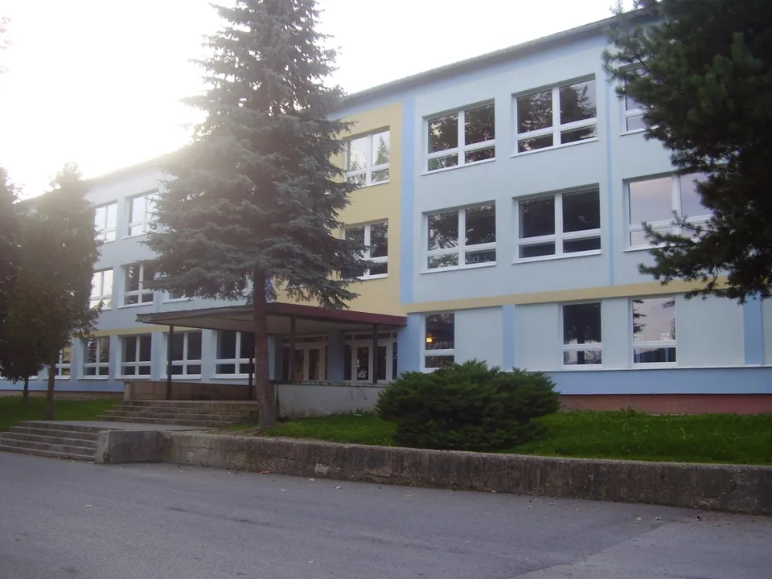
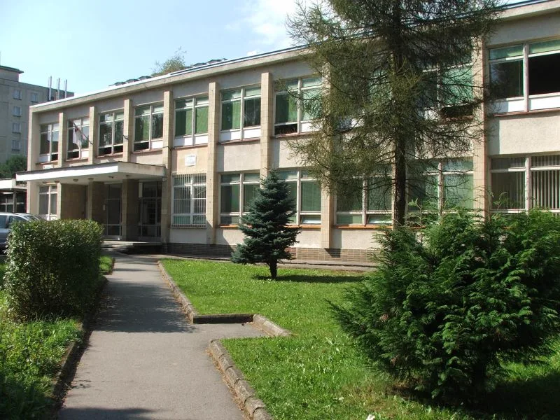
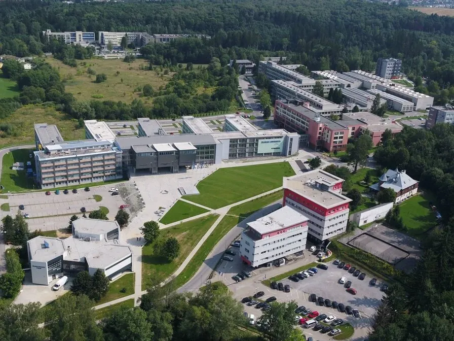

EDUCATION

1987 – 1995
PRIMARY SCHOOL

1995 – 1999
SECONDARY TECHNICAL SCHOOL
ROAD TRANSPORT OPERATIONS AND MAINTENANCE

1999 – 2006
UNIVERSITY OF ŽILINA
RAILWAY TRANSPORT OPERATIONS AND MAINTENANCE
GRADUATED WITH A MASTER OF ENGINEERING DEGREE